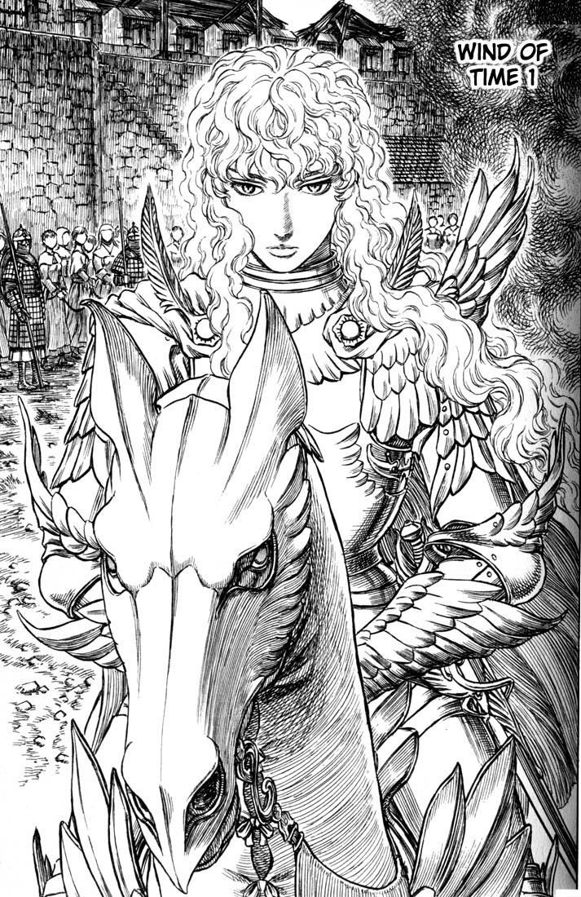
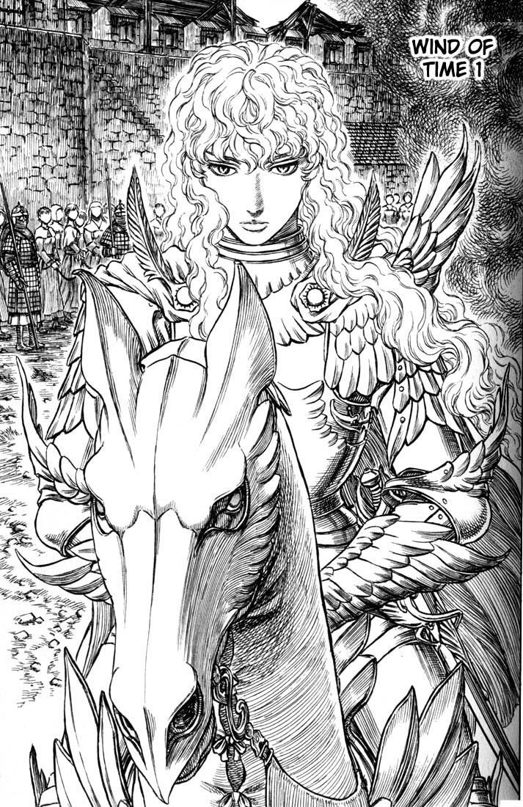
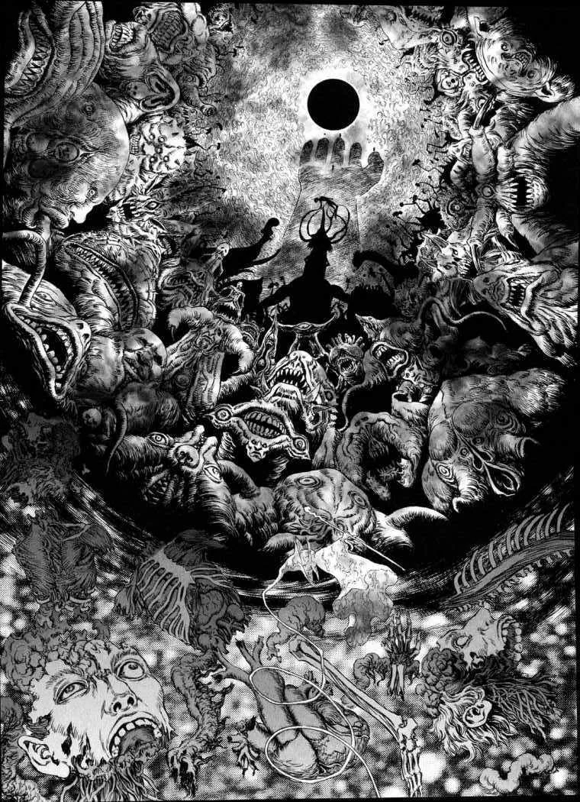

| Autore | Kentaro Miura |
| Nome | Berserk |
| Casa editrice | Panini |
| Stato in patria | In corso |
| Numero volumi | 42 |
| Categoria | Seinen |
Informazioni
Berserk (ベルセルク?, Beruseruku) è un manga scritto e disegnato da Kentarō Miura[6]. Le vicende si incentrano su Gatsu, un antieroico guerriero solitario costretto a vagare senza sosta per sopravvivere e trovare vendetta. La storia, inizialmente dell'orrore ma via via arricchita di elementi del genere fantasy, esplora gli anfratti più profondi della natura umana. Le tematiche principali sono l'illusorietà del libero arbitrio, l'oscuro e necessario potere della violenza, il destino dell'uomo, l'onnipresenza del male. Tanto l'anime quanto il manga sono noti per la loro cruda violenza. Il manga è serializzato in Giappone da Hakusensha nella collana Young Animal dal 1989. In seguito alla morte dell'autore, nel maggio 2021, la serie viene portata avanti da Kōji Mori e dagli assistenti di Miura a partire dal 24 giugno 2022. L'edizione italiana è pubblicata dalla Panini Comics: la prima edizione risale all'agosto 1996 ed in seguito sono state edite diverse ristampe che portano il nome di Berserk Collection, Maximum Berserk, Berserk Collection Serie nera e Berserk Deluxe. Il successo del manga ha portato alla realizzazione, nel 1997, di una prima serie televisiva anime, di una trilogia di film tra il 2012 e il 2013, il cui progetto si intitola Berserk - L'epoca d'oro[7], e di una seconda serie televisiva nel 2016, seguita da una seconda stagione nel 2017, oltre a diversi videogiochi. Tuttavia, gli adattamenti si discostano sensibilmente dall'opera originale saltando intere sezioni della storia, personaggi principali e secondari o riflessioni dei protagonisti. Questi tagli rendono meno comprensibile ed approfondita la loro caratterizzazione, lasciando solo abbozzati i temi della narrazione[8][9]. È considerato uno dei migliori manga della storia, nonché uno dei più influenti.[10]
 

Trama
In una sorta di Medioevo alternativo, Gatsu è un formidabile guerriero mercenario che nella vita non ha conosciuto altro che guerra e violenza. Nato dal cadavere di una donna impiccata, all'età di due anni Gatsu perde a causa della peste anche la madre adottiva, venendo quindi allevato nella compagnia di ventura del padre adottivo, Gambino, dove impara fin dalla tenera età a combattere per sopravvivere. Gambino è tuttavia un padre distaccato e violento: in un raptus di rabbia tenta di uccidere Gatsu, che, nel tentativo di difendersi, trafigge a morte il padre, vedendosi quindi costretto a lasciare la compagnia. Combattendo spietatamente sui più svariati campi di battaglia, Gatsu attira l'attenzione del carismatico leader della Squadra dei Falchi, Grifis, il quale lo sconfigge a duello e lo costringe a entrare a far parte della sua compagnia di mercenari. Nel periodo che segue, Gatsu sviluppa una profonda ammirazione per Grifis, sperimenta per la prima volta affetto e amicizia per i suoi nuovi commilitoni e si innamora di Caska, braccio destro del leader.
La Squadra dei Falchi viene arruolata dal regno delle Midlands, in lotta contro la vicina Tudor nella guerra dei cent'anni, e riesce a guadagnare rapidamente vittorie e fama grazie all'intelligenza tattica di Grifis, che sogna di fondare un proprio regno, e all'abilità in combattimento di Gatsu. Al termine del vittorioso conflitto, sentendosi sempre più imprigionato all'ombra del leader, Gatsu decide di lasciare la squadra in cerca della propria identità. L'abbandono, tuttavia, devasta emotivamente Grifis: il leader dei Falchi disintegra ogni possibilità di scalata sociale costringendo ad un rapporto la giovane principessa Charlotte e, una volta scoperto, venendo imprigionato e sottoposto ad atroci torture per un anno intero. Gatsu apprende della sorte dell'amico e decide di riunire i rimanenti membri della Squadra dei Falchi, ormai allo sbando, per liberarlo; quando il gruppo finalmente trova Grifis, egli è barbaramente mutilato e irrimediabilmente distrutto nello spirito.
In preda alla disperazione per le proprie condizioni, Grifis tenta il suicidio,
attivando involontariamente un artefatto in suo possesso, il bejelit; di conseguenza, la Squadra dei Falchi viene trasportata in un piano astrale in cui dimorano gli arcidemoni della Mano di Dio. Incoraggiato da queste creature, Grifis sacrifica le vite dei suoi soldati agli Apostoli, potenti creature demoniache, in un banchetto di morte chiamato Eclisse,per poter in cambio rinascere come Phempt, quinto membro della Mano di Dio, e poter continuare ad inseguire il proprio sogno. Grazie all'intervento del Cavaliere del Teschio, Gatsu e Caska riescono a sfuggire alla carneficina, pagando però un prezzo carissimo: Gatsu ha perso un occhio e un braccio nei combattimenti, Caska è in preda alla follia a causa della violenza sessuale subita da Phemt nel corso dell'Eclissi, ed entrambi vengono marchiati con un simbolo che li identifica come sacrifici umani, attirando ogni notte creature soprannaturali che li tormentano.

Gatsu inizialmente dà la caccia agli Apostoli, giurando vendetta contro Phemt e la Mano di Dio, ma è costretto ad interrompere i suoi propositi per salvare Caska, che rischia di essere messa al rogo come strega nella città di Sant'Albione, e per condurla sana e salva nel regno degli elfi di Elfhelm, dove c'è la possibilità che riacquisti la ragione. Nel corso del suo viaggio incontra l'elfo Pak, i membri dell'ordine cavalleresco della Santa Catena Ferrea Farnese e Serpico, il giovane Isidoro e la strega Shilke, accompagnata dall'elfa Ibarella, che decidono di aiutarlo nella sua missione.
Nel frattempo, Grifis rinasce nella sua forma fisica e, grazie al supporto di numerosi Apostoli a lui fedeli, crea una nuova Squadra dei Falchi per combattere l'esercito dell'Impero Kushan, che ha invaso le Midlands. Lo scontro finale tra Grifis e l'imperatore Ganishuka, un apostolo ribelle, porta alla trasformazione del mondo e al sovrapporsi della dimensione astrale con quella reale; di conseguenza, numerose creature magiche incominciano ad invadere il mondo. Dopo la vittoria, Grifis si fidanza ufficialmente con la principessa Charlotte e riceve la benedizione del Papa e l'acclamazione del popolo, che lo considerano l'incarnazione del Falco di Luce che avrebbe salvato il mondo. Il leader dei Falchi, di fatto nuovo sovrano delle Midlands, riesce a realizzare il suo sogno e costruisce una nuova capitale, Falconia, trasformandola in un candido regno utopico dove gli umani vivono in prosperità al riparo dai mostri.
 Nel frattempo, Gatsu e i suoi compagni si ricongiungono a Caska e riescono dopo molte peregrinazioni a raggiungere l’Isola degli Elfi dove quest’ultima, grazie ad un rito magico compiuto da Shilke e Farnese, riacquista finalmente il senno. La felicità di Gatsu è tale da indurre in lui il pensiero di abbandonare i propositi di guerra e di vendetta contro Grifis e, con essi, la sua Ammazzadraghi. Si tratta però di una gioia effimera. Grifis e la nuova squadra dei Falchi giunge sull’isola e rapisce Caska, rendendo vano ogni sforzo di Gatsu di salvare l’amata e lasciando questi profondamente distrutto. L’arrivo del quinto Angelo genera un cataclisma in cui tutte le creature magiche, tra cui gli elfi e le sirene con cui il gruppo aveva legato durante la permanenza, scompaiono, polverizzandosi.
Nel frattempo, Gatsu e i suoi compagni si ricongiungono a Caska e riescono dopo molte peregrinazioni a raggiungere l’Isola degli Elfi dove quest’ultima, grazie ad un rito magico compiuto da Shilke e Farnese, riacquista finalmente il senno. La felicità di Gatsu è tale da indurre in lui il pensiero di abbandonare i propositi di guerra e di vendetta contro Grifis e, con essi, la sua Ammazzadraghi. Si tratta però di una gioia effimera. Grifis e la nuova squadra dei Falchi giunge sull’isola e rapisce Caska, rendendo vano ogni sforzo di Gatsu di salvare l’amata e lasciando questi profondamente distrutto. L’arrivo del quinto Angelo genera un cataclisma in cui tutte le creature magiche, tra cui gli elfi e le sirene con cui il gruppo aveva legato durante la permanenza, scompaiono, polverizzandosi.